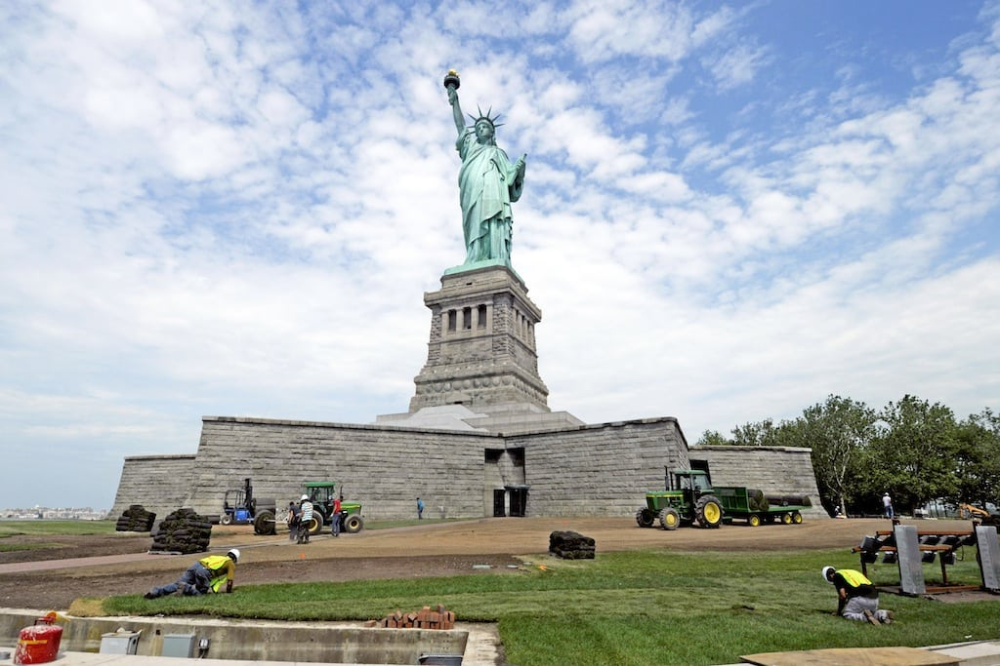
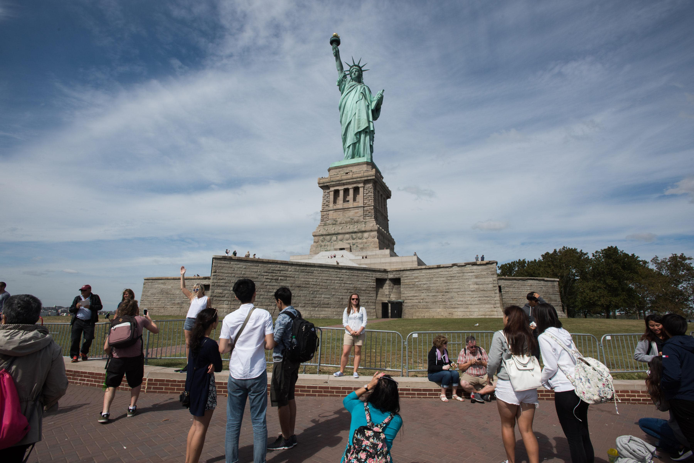

North America is a continent brimming with tourist destinations that cater to a wide range of interests. From natural wonders to cultural landmarks, here's a simplified overview of some popular attractions:
Statue of Liberty (New York City, USA): This iconic statue symbolizes freedom and is a must-see for visitors to New York City. It's located on Liberty Island and offers fantastic views of the Manhattan skyline.
Grand Canyon (Arizona, USA): The Grand Canyon is a breathtaking natural wonder carved by the Colorado River over millions of years. Visitors can enjoy awe-inspiring vistas, hiking trails, and helicopter tours.
The Metropolitan Museum of Art (New York City, USA): Situated on Fifth Avenue, The Met is one of the world's largest art museums. It houses an extensive collection spanning thousands of years, including works from various cultures and time periods.
Niagara Falls (Canada/USA): Niagara Falls is a stunning waterfall shared by Canada and the United States. Visitors can take boat tours to get up close to the falls or enjoy scenic views from observation decks.
Chichen Itza (Yucatan Peninsula, Mexico): Chichen Itza is an ancient Mayan archaeological site in Mexico. It features impressive ruins such as the El Castillo pyramid and offers insight into Mayan civilization.
The Wizarding World of Harry Potter (Florida/USA): is a themed area within Universal Orlando Resort that brings the magical world of J.K. Rowling's Harry Potter books and films to life. It's divided into two main sections: Hogsmeade, located in Universal's Islands of Adventure park, and Diagon Alley, situated in Universal Studios Florida park.
These attractions represent just a glimpse of the diverse tourist spots found throughout North America, offering something for everyone to enjoy.
Statue of LibertyStatue of LibertyStatue of Liberty
Statue of Liberty (New York City, USA): This iconic statue symbolizes freedom and is a must-see for visitors to New York City. It's located on Liberty Island and offers fantastic views of the Manhattan skyline.
Located on Liberty Island in New York Harbor, the Statue of Liberty is one of the most iconic symbols of freedom and democracy in the world. A gift from France to the United States, the statue was dedicated in 1886 and has since become a symbol of hope and welcome for immigrants arriving in America.
One of the highlights I eagerly anticipate is witnessing the phenomenon of the serpent's shadow during the spring and autumn equinoxes. As the sun sets, the play of light and shadow creates the illusion of a serpent slithering down the steps of El Castillo, a testament to the advanced astronomical knowledge of the ancient Mayans.Standing at 305 feet (93 meters) tall, the Statue of Liberty depicts a robed female figure representing Libertas, the Roman goddess of freedom. She holds a torch above her head with her right hand and carries a tablet inscribed with the date of the American Declaration of Independence in her left hand. At her feet lies broken chains, symbolizing the abolition of slavery.
Grand Canyon (Arizona, USA): The Grand Canyon is a breathtaking natural wonder carved by the Colorado River over millions of years. Visitors can enjoy awe-inspiring vistas, hiking trails, and helicopter tours.
The Grand Canyon is one of the most iconic natural wonders in the world, located in northern Arizona, USA. Carved by the Colorado River over millions of years, this immense canyon stretches for over 270 miles (435 kilometers) and reaches depths of over a mile (1.6 kilometers).
Visitors to the Grand Canyon can experience its breathtaking beauty from various viewpoints along the South Rim and North Rim, offering panoramic vistas of the canyon's colorful rock formations, rugged cliffs, and winding river below. Hiking trails like the Bright Angel Trail and South Kaibab Trail provide opportunities to explore the canyon's depths and witness its geological wonders up close.
The Metropolitan Museum of Art The Metropolitan Museum of Art The Metropolitan Museum of Art
The Metropolitan Museum of Art (New York City, USA): Situated on Fifth Avenue, The Met is one of the world's largest art museums. It houses an extensive collection spanning thousands of years, including works from various cultures and time periods.
One standout cultural landmark in North America is The Metropolitan Museum of Art in New York City, USA. Commonly referred to as "The Met," this renowned institution is one of the largest and most prestigious art museums in the world, housing a vast and diverse collection spanning over 5,000 years of human history.
Visitors to The Met can explore a wide variety of art forms and cultural artifacts, including paintings, sculptures, decorative arts, textiles, and photography. Highlights of the museum's collection include iconic works by artists such as Vincent van Gogh, Pablo Picasso, Rembrandt, and Leonardo da Vinci, as well as ancient treasures from civilizations around the world.
Niagara Falls (Canada/USA): Niagara Falls is a stunning waterfall shared by Canada and the United States. Visitors can take boat tours to get up close to the falls or enjoy scenic views from observation decks.
Niagara Falls is a bucket-list destination for many travelers due to its sheer grandeur and iconic status as one of the world's most famous waterfalls. The sheer volume of water cascading over the falls is truly mesmerizing, creating a spectacle that must be seen to be believed. Visitors are drawn to Niagara Falls not only for its natural beauty but also for the range of experiences it offers, from exhilarating boat tours to scenic viewpoints and captivating attractions.
These images showcase the stunning beauty and range of experiences awaiting visitors to Niagara Falls, making it a must-visit destination for nature lovers, thrill-seekers, and anyone seeking a truly unforgettable travel experience.
Chichen Itza (Yucatan Peninsula, Mexico):Chichen Itza, located in Mexico's Yucatan Peninsula, has been a destination steeped in mystery and fascination for me. As an avid enthusiast of ancient civilizations and history, the opportunity to explore the remnants of this once-great Mayan city has always captivated my imagination.Chichen Itza is an ancient Mayan archaeological site in Mexico. It features impressive ruins such as the El Castillo pyramid and offers insight into Mayan civilization.
The allure of Chichen Itza lies not only in its impressive architectural structures, such as the iconic El Castillo pyramid, but also in the rich history and culture it represents. Walking through the ancient ruins, I yearn to unravel the secrets of the Mayan civilization, to envision the bustling streets and vibrant ceremonies that once animated this sacred site.
One of the highlights I eagerly anticipate is witnessing the phenomenon of the serpent's shadow during the spring and autumn equinoxes. As the sun sets, the play of light and shadow creates the illusion of a serpent slithering down the steps of El Castillo, a testament to the advanced astronomical knowledge of the ancient Mayans.
The Wizarding World of Harry Potter (Florida/USA): is a themed area within Universal Orlando Resort that brings the magical world of J.K. Rowling's Harry Potter books and films to life. It's divided into two main sections: Hogsmeade, located in Universal's Islands of Adventure park, and Diagon Alley, situated in Universal Studios Florida park.
in Diagon Alley, visitors can stroll down the cobblestone streets, shop for magical supplies at places like Ollivanders Wand Shop and Weasleys' Wizard Wheezes, and dine at the Leaky Cauldron. Meanwhile, at Hogwarts Castle, guests can embark on the groundbreaking ride "Harry Potter and the Forbidden Journey," which takes them on a thrilling journey through the halls of Hogwarts, encountering magical creatures and characters from the series along the way.